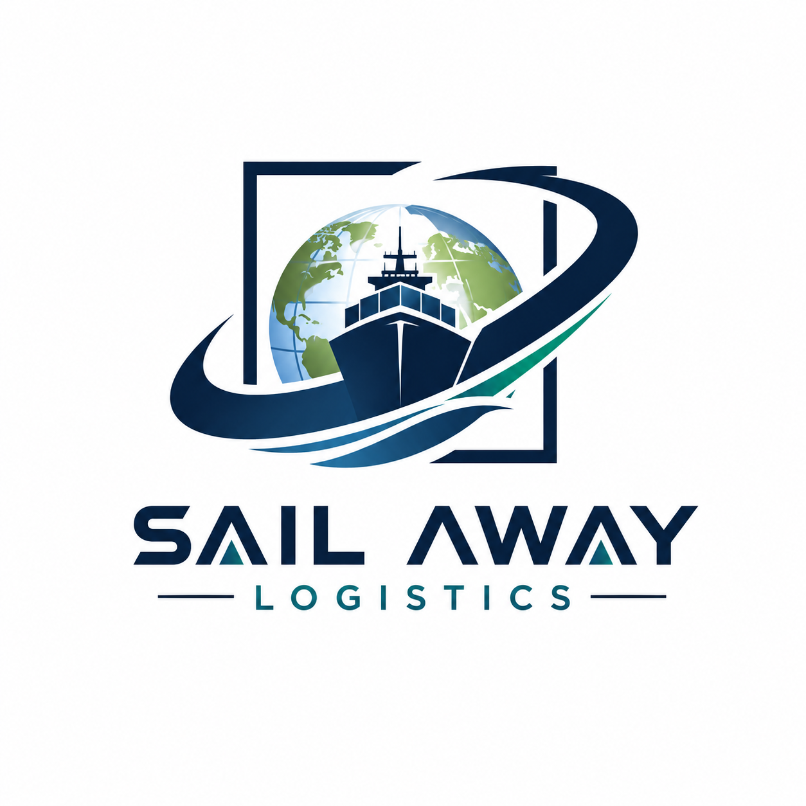
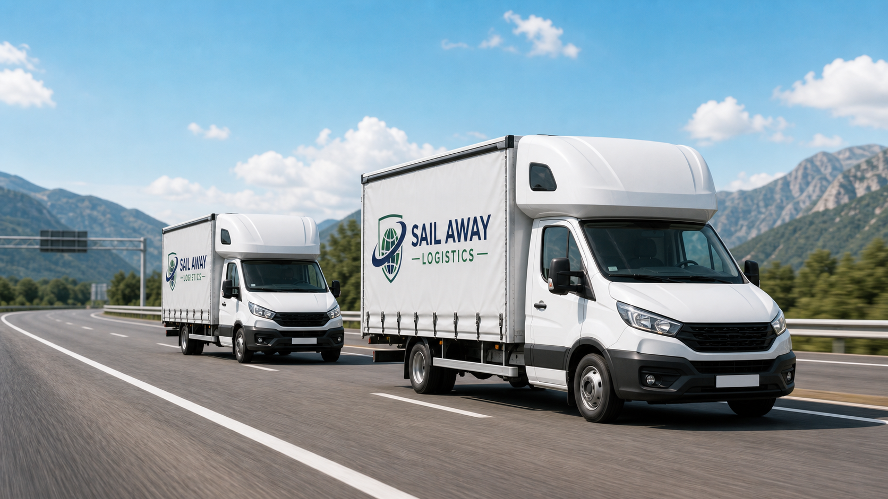

Part Load Transport
Efficient transport for smaller shipments, urgent pallets, partial van capacity and flexible routes across the EU.

Sailaway LogisticsEU sleeper-cabin van freight up to 3.5t
Part load and full load transport across the whole European Union, with 24/7 dispatch assistance and complete document support.
What we do
Sailaway Logistics focuses on part loads and full loads across the EU, using vans up to 3.5t with sleeper capsules for long-distance routes and flexible delivery planning.
Efficient transport for smaller shipments, urgent pallets, partial van capacity and flexible routes across the EU.
Dedicated van capacity for direct shipments where the client needs one vehicle, one route and clear delivery timing.
24/7 dispatch assistance, driver communication, route follow-up, shipment status updates and practical problem solving on the road.
Support with necessary transport documentation for import and export, including CMR, POD, transport orders and delivery confirmations.
Search by service
Dedicated pages help clients and search engines understand exactly what Sailaway Logistics offers across EU van freight, dispatch, documentation and fleet capacity.
For clients
When your shipment needs a fast answer, Sailaway Logistics gives you a direct process: confirmed van capacity, clear route details, driver communication, 24/7 dispatch support and document follow-up after delivery.

Fleet & partnership
For transport companies that already have their own vans, Sailaway Logistics can support daily dispatch, freight coordination, documentation and client follow-up. When extra capacity is needed, we also operate our own 3.5t sleeper-cabin van fleet.
We help partners keep vehicles moving with dispatch assistance, freight search, route communication, paperwork support and transport follow-up.
Sailaway Logistics has 8 vans available for EU part loads and full loads, giving clients extra flexibility when dedicated capacity is needed.
All vans have cargo dimensions of 430 x 220 x 230 cm, suitable for professional EU van freight up to 3.5t.
Coverage
Sailaway Logistics works in partnership with Wolf Express DOO, established in 2022, combining modern logistics communication with practical road transport experience.
In partnership with Wolf Express DOO, established in 2022.
European coverage
Our work is built around road transport across the whole European Union. The marked points show representative cities, regions and freight corridors where van transport is commonly needed. Coverage is not limited to the dots: we support pickups and deliveries in major cities, smaller towns, villages and industrial zones when accessible by road.
Dots are representative service areas and common freight corridors, not a false claim of every exact completed delivery location.
How it works
Share loading place, unloading place, cargo details, loading date, weight and whether it is part load or full load.
We align timing, price, sleeper-van capacity, driver details and loading instructions before dispatch.
Communication stays clear through pickup, transit and unloading so the client knows what is happening.
CMR, POD and necessary import/export transport documents are followed so the shipment can be closed cleanly.
Contact
Send the route and shipment details. We will respond with availability, timing and pricing for part load or full load transport up to 3.5t.